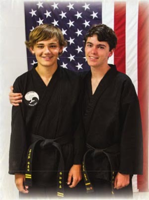
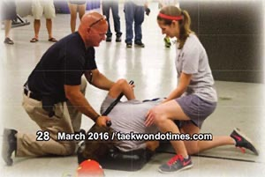
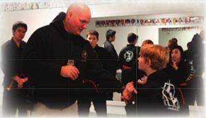
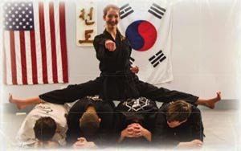

The following is an article written by Ms. Victoria Hornback (2nd Dan) about the Two Rivers Martial Arts Black Belt Youth Group. This article first appeared in Tae Kwon Do Times magazine in March of 2016. This article is reprinted here with the permission of Tae Kwon Do Times.
Mixing it up in the Dojang
by Victoria Hornback

Our dojang embraced change when two young black belts, ages 12 and 13, went in front of the school's board of directors in
April of 2013. They expressed the need for a reform after first-hand seeing a
trend among their friends who quit after achieving the rank of black belt.
Daniel Hornback and Riley Hammar shared the struggles they themselves had faced
in transitioning from color belt - where you test and achieve goals every few
months - to not testing for years on end as a black belt. They also spoke about
the increased responsibility of teaching and helping at branch level and how
that reduced the time they had in the past used for training with their peers.
The young black belts came to the board meeting prepared and proposed a solution
to this by requesting permission to form a Black Belt Youth Group (BBYG). The
plan was to hold class once a month where challenges would be a must and guest
instructors were to be actively pursued.
"We are young and itching to show the world what we can do, and if given a challenge,
we will not disappoint!"
Two Rivers Martial Arts BBYG has now hosted guests from grandmasters, masters,
police officers, the FBI and private citizens with special training. They have
sampled sword fighting, different types of sparring, and ground self-defense.
They have been introduced to ALICE (the Active Shooter Response Program) and
nunchakus and have had field trips to the Des Moines Police Academy's Firearms
and Training Facility. After each class they meet at CiCi's for pizza and social
time as this allows them to catch up with each other on a personal level and
strengthen their friendships even more. Daniel Hornback explains: “We all need
to remember that first and foremost we began this journey as students. No matter
what rank we achieve and students we train, in the core we are pupils only limited
by our own imagination. What we have done with our group is remove the walls
that separate us from other disciplines and extend invitations to other organizations/people
for our continued growth. Incredible things have come of this; bonds are forged
and experiences shared.†The impact and foresight of these two young black
belts are nothing less than astounding.

One of the group's most frequent guests is Senior Police Officer "SPO" Latcham, the Des Moines Police Academy's Fire Arms
and Training coordinator, regular SWAT & SWAT -weapons of mass destruction team,
with 17 years in law enforcement, who also served in the military with four oversees
deployments and has taught protective services detail personnel in the private
sector. He explains his interest for working with the group: "As a law enforcement
officer, it is great to see such a nice group of kids with this level of dedication,
discipline and respect. Martial artists are just like us, and I see a lot of
carryover as our police training takes athleticism, coordination along with a
great sense of responsibility. In martial arts you need those same qualities
to make it to black belt." SPO Latcham explains that as they grow, the group
would be great candidates for the police academy or other similarly structured
environments.

"
SPO Latcham goes on to say that he really enjoys his time spent with the youths: "It is not just good for the kids but for
us as well. The police department likes the opportunity to interact with our
community and shed a positive light on the police, as most people do not interact
with law enforcement unless there is something wrong. This changes that and gives
the kids a chance to get to know us in a stressfree environment, making it beneficial
for both of our organizations."
Other guests have stressed the importance of staying out of trouble, excelling
in school and surrounding yourself with good influences. This will play a big
part in their chances to achieve the careers they want. It is especially important
if they have government career ambitions, as even choices made at an early age
will be considered.

Ms. Alex Lerch, who has only been a black belt since Two Rivers Martial Arts BBYG's creation, adds: "It's not only about
us. As we're being taught different styles, we're also learning techniques to
teach to other people and spread our influence beyond what we've ever imagined.
We are the next generation. It's extremely important that we are able to pass
on information that is as important as self-protection."
Another outgrowth of the group's success is that some of its members have chosen
local colleges for their continued education, leading the BBYG to begin the development
of a mentor/junior instructor program for the young members to progress to as
they age.
Daniel Hornback and Riley Hammar were right on target when defining the need
for young black belts to stay connected. They also serve as inspiration to the
upcoming youths to forge ahead on those difficult days when their training might
otherwise get the best of them. There are amazing adventures waiting for those
who make it to the prestigious rank of black belt! That is, if you are under
the age of twenty.

Photos taken by Joe Solem @ JS Photos Victoria Hornback is a black belt, instructor, business owner and proud mother who
lives in the US but originates from Sweden. She is married to John, also a black
belt and "Aussie" born in Malaysia. "The diversity in our family creates new
ways to view the world and makes us part of a growing, multi-cultural society."
She is passionate about creating partnerships between private, state and government
law enforcement and martial arts. "We need to work together to stay strong."
She can be reached at tkdswede@gmail.com
taekwondotimes.com / March 2016